Greedy Subspace Clustering
| 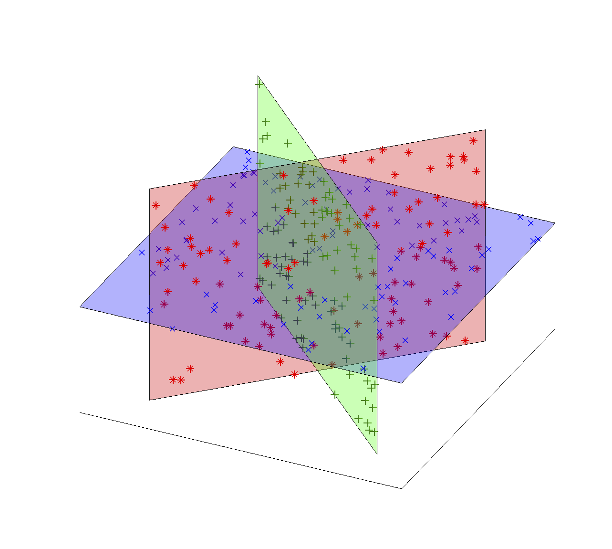 | Subspace clustering is the problem of fitting a collection of high-dimensional data points to a union of subspaces. This problem can be regarded as ‘‘Mixture of PCA’’ because the points are to be partitioned into subsets each of which is modeled by a low-dimensional subspace. This model naturally arises in settings where data from multiple latent phenomena are mixed together and need to be separated. State-of-the-art algorithms for subspace clustering are based on solving a convex program with size as large as the squared number of data points [1-3]. As the amount of the data increases, the computational cost becomes critical. To reduce the cost, we proposed greedy algorithms for the problem. Our algorithms are provable in the sense that the exactly correct clustering is guaranteed under certain conditions in the standard models. For example, when In practice, our greedy algorithm, which is in general significantly faster than solving a convex program, performs competitively against the state-of-the-art algorithms in real applications such as motion segmentation and face clustering. For more detailed results in this project, please see our paper. |
 -dimensional subspaces are drawn uniformly at random in , and random data points are iid uniformly generated on each subspace, exact clustering is guaranteed with high probability if 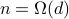 and 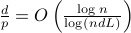. This condition is no worse than the existing statistical guarantees.
-dimensional subspaces are drawn uniformly at random in , and random data points are iid uniformly generated on each subspace, exact clustering is guaranteed with high probability if 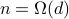 and 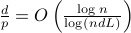. This condition is no worse than the existing statistical guarantees.Applications
Subspace clustering has diverse applications such as computer vision(motion segmenation, face clustering, etc), system identification, gene expression analysis.
Motion segmentation : Given a collection of feature points extracted from a video sequence, the points of a rigidly moving object lies on a low-dimensional subspace. Based on this observation, we can segment the feature points with respect to the objects.
| 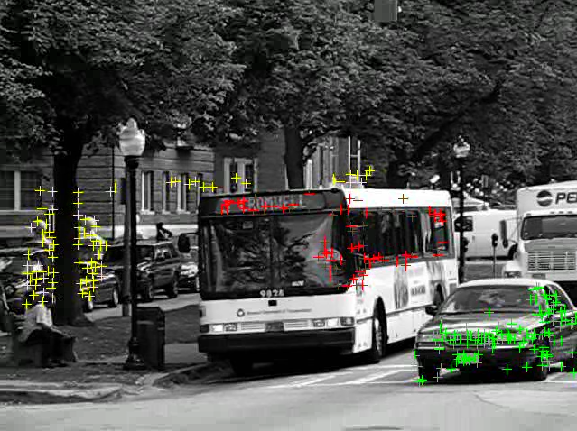 | 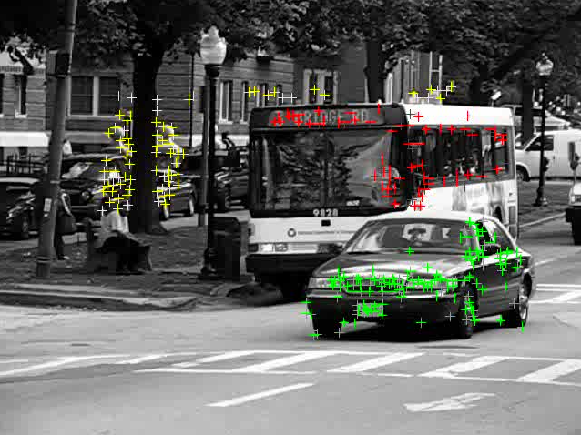 | 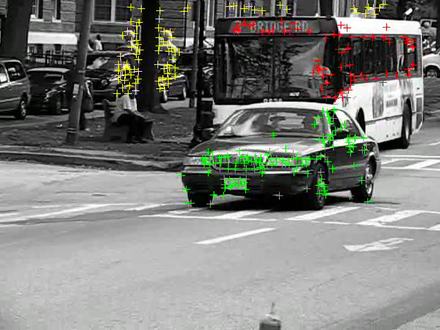 | 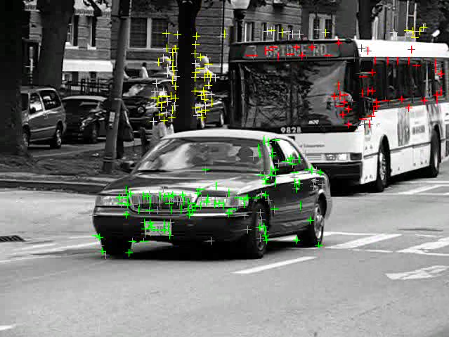 |
Face clustering : Under varying illumination conditions, the images of a face can be modeled by a low-dimensional subspace. Using subspace clustering algorithms, we can segment the images of different faces with respect to the faces.
| 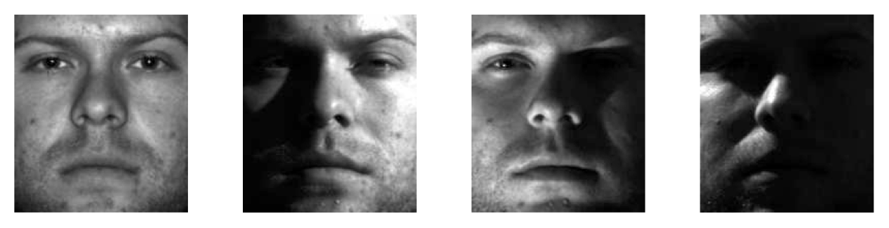 | 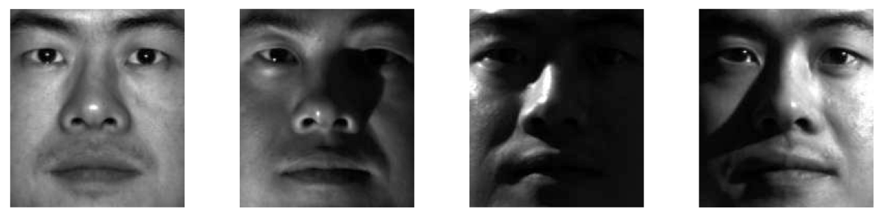 | 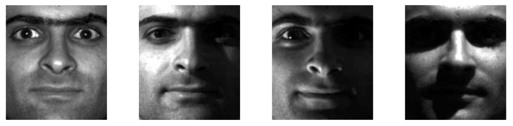 |
Paper
Dohyung Park, Constantine Caramanis, and Sujay Sanghavi, Greedy Subspace Clustering, In Proceedings of Neural Information Processing Systems (NIPS), 2014. (NIPS poster) (bibtex)
Codes
-
This package contains matlab functions for our algorithm, and the scripts that reproduce the tables and the figures in our paper. To run the scripts, you have to download the matlab codes of the competing algorithms from their corresponding links. Please read README.txt and follow the instructions.
References
E. Elhamifar and R. Vidal. Sparse subspace clustering: Algorithm, theory, and applications. IEEE Trans. Pattern Anal. Mach. Intelligence, 35(11):2765–2781, 2013.
M. Soltanolkotabi and E. J. Candes. A geometric analysis of subspace clustering with outliers. The Annals of Statistics, 40(4):2195–2238, 2012.
G. Liu, Z. Lin, S. Yan, J. Sun, Y. Yu, and Y. Ma. Robust recovery of subspace structures by low-rank representation. IEEE Trans. Pattern Anal. Mach. Intelligence, 35(1):171–184, 2013.
G. Chen and G. Lerman. Spectral curvature clustering. International Journal of Computer Vision, 81(3):317–330, 2009.
E. L. Dyer, A. C. Sankaranarayanan, and R. G. Baraniuk. Greedy feature selection for subspace clustering. The Journal of Machine Learning Research (JMLR), 14(1):2487–2517, 2013.
R. Heckel and H. Bolcskei. Robust subspace clustering via thresholding. arXiv preprint, arXiv:1307.4891v2, 2014.
R. Tron and R. Vidal. A benchmark for the comparison of 3-d motion segmentation algorithms. In IEEE conference on Computer Vision and Pattern Recognition (CVPR), 2007.
A. S. Georghiades, P. N. Belhumeur, and D. J. Kriegman. From few to many: Illumination cone models for face recognition under variable lighting and pose. IEEE Trans. Pattern Anal. Mach. Intelligence, 23(6):643–660, 2001.
K. C. Lee, J. Ho, and D. Kriegman. Acquiring linear subspaces for face recognition under variable lighting. IEEE Trans. Pattern Anal. Mach. Intelligence, 27(5):684–698, 2005.